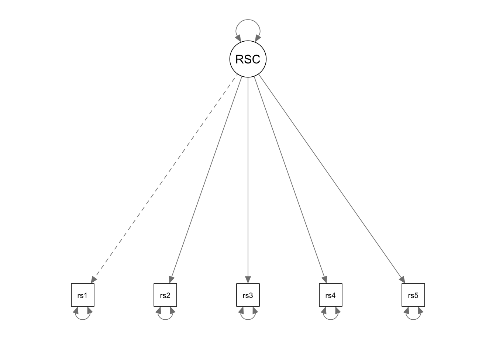
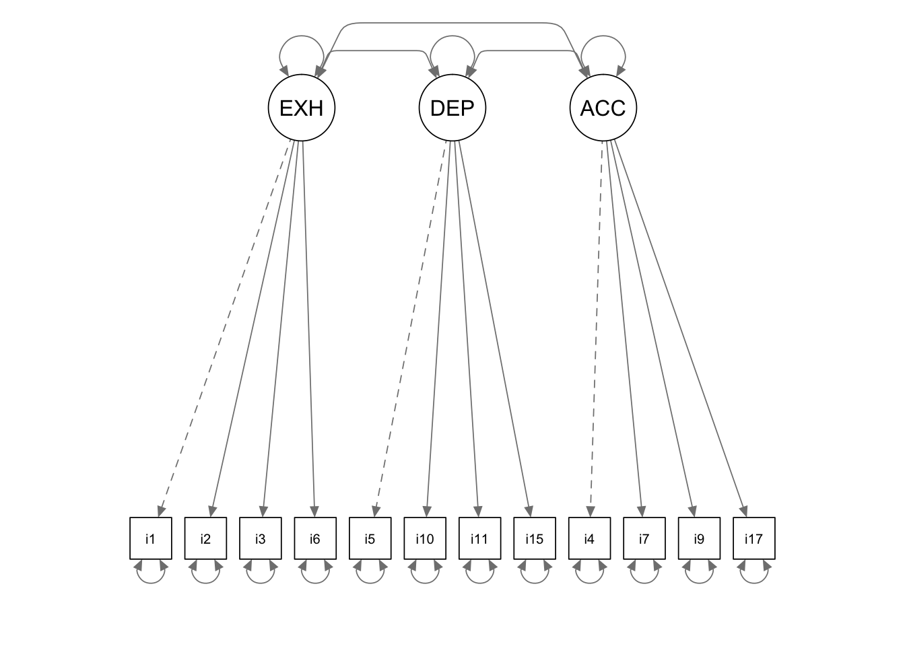
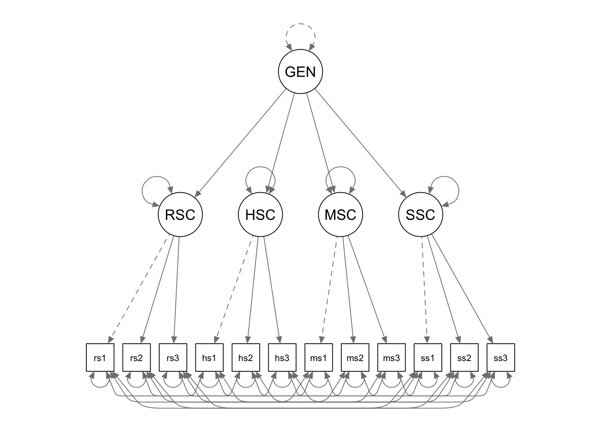
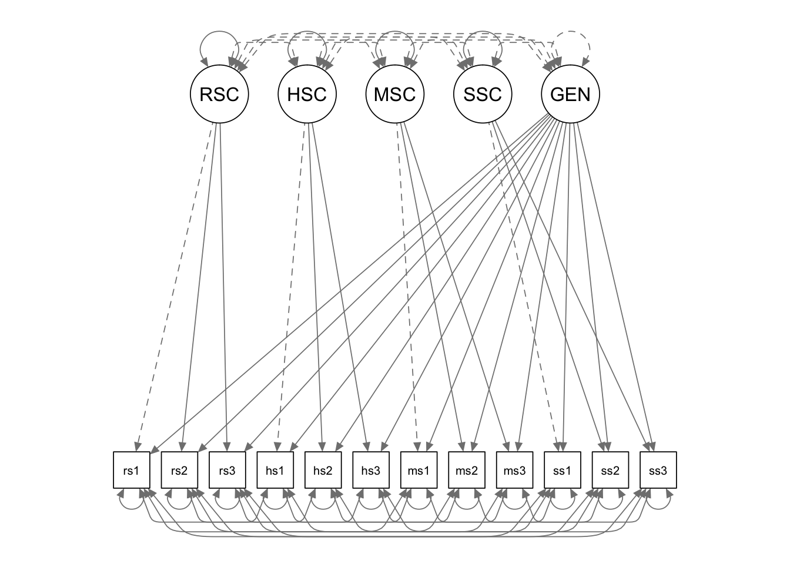

In this tutorial, we are going to use lavaan for confirmatory factor analysis.
library(lavaan)The data for this example is saved in a csv file named “proficiencyraw-female.csv”, which is provided as part of the course materials. You can use the read.table() function to read in a csv file. There are many different ways for you to supply the file path in the read.table() function call. Below I first set the working directory to the folder where my data is saved, and then I simply supply the name of the data file in the function call.
setwd(mypath) # change it to the path of your own data folder
data <- read.table("proficiencyraw-female.csv", sep=",", header=F)
data <- data[, 7:11]
# give variable names
colnames(data) <- paste0("rsc",1:5)You can take a look at the data and get the sample statistics.
head(data)## rsc1 rsc2 rsc3 rsc4 rsc5
## 1 3 3 5 3 4
## 2 3 4 5 5 3
## 3 4 6 3 4 5
## 4 2 3 3 4 4
## 5 3 3 4 2 3
## 6 3 4 4 4 3str(data)## 'data.frame': 1000 obs. of 5 variables:
## $ rsc1: int 3 3 4 2 3 3 4 4 2 3 ...
## $ rsc2: int 3 4 6 3 3 4 5 4 3 2 ...
## $ rsc3: int 5 5 3 3 4 4 6 5 2 5 ...
## $ rsc4: int 3 5 4 4 2 4 5 4 3 3 ...
## $ rsc5: int 4 3 5 4 3 3 4 4 3 3 ...# sample means
apply(data, 2, mean)## rsc1 rsc2 rsc3 rsc4 rsc5
## 3.308 3.657 3.645 3.230 3.558# sample correlations
knitr::kable(cor(data))| rsc1 | rsc2 | rsc3 | rsc4 | rsc5 | |
|---|---|---|---|---|---|
| rsc1 | 1.0000000 | 0.5017493 | 0.3986158 | 0.5097268 | 0.4249257 |
| rsc2 | 0.5017493 | 1.0000000 | 0.4842894 | 0.5954733 | 0.5320756 |
| rsc3 | 0.3986158 | 0.4842894 | 1.0000000 | 0.5405869 | 0.4089965 |
| rsc4 | 0.5097268 | 0.5954733 | 0.5405869 | 1.0000000 | 0.5158959 |
| rsc5 | 0.4249257 | 0.5320756 | 0.4089965 | 0.5158959 | 1.0000000 |
We now fit a one factor model to the data.

We use the model syntax to tell lavaan what model we want to fit. Different from our previous MLR and MVPA examples, we now have latent variables that are not observed in the data. For lavaan to recognize the latent variables, we must define each of them using the special operator “=~”, which is followed by the indicators of the latent variable being defined. You can read the “=~” operator as “is measured by”.
In our example, we have to define one latent variable: RSC (F1). By default, lavaan will fix the loading of the first indicator to 1 (similar with Mplus).
cfa.Model <- '
# measurement model
RSC =~ rsc1 + rsc2 + rsc3 + rsc4 + rsc5
# mean structure
rsc1~1
rsc2~1
rsc3~1
rsc4~1
rsc5~1
# variances
rsc1 ~~ rsc1
rsc2 ~~ rsc2
rsc3 ~~ rsc3
rsc4 ~~ rsc4
rsc5 ~~ rsc5
'We can still use the sem() function for CFA. You just need to simply supply the model syntax and the data.
cfa.Fit <- sem(cfa.Model, data = data)Next you can summarize the results using the summary()function. To get more info on the model fit measures, you can use the optional argument fit.measures = TRUE. To take a look at the standardzied parameter estimates, you can use the optional argument standardized = TRUE. Unstandardized solutions are displayed in the column labled “Estimate”. The standardized solutions are listed in the column labeled “Std.all”.
summary(cfa.Fit, fit.measures = T, standardized = T)## lavaan 0.6-8 ended normally after 22 iterations
##
## Estimator ML
## Optimization method NLMINB
## Number of model parameters 15
##
## Number of observations 1000
##
## Model Test User Model:
##
## Test statistic 10.129
## Degrees of freedom 5
## P-value (Chi-square) 0.072
##
## Model Test Baseline Model:
##
## Test statistic 1693.051
## Degrees of freedom 10
## P-value 0.000
##
## User Model versus Baseline Model:
##
## Comparative Fit Index (CFI) 0.997
## Tucker-Lewis Index (TLI) 0.994
##
## Loglikelihood and Information Criteria:
##
## Loglikelihood user model (H0) -7542.357
## Loglikelihood unrestricted model (H1) -7537.293
##
## Akaike (AIC) 15114.715
## Bayesian (BIC) 15188.331
## Sample-size adjusted Bayesian (BIC) 15140.690
##
## Root Mean Square Error of Approximation:
##
## RMSEA 0.032
## 90 Percent confidence interval - lower 0.000
## 90 Percent confidence interval - upper 0.061
## P-value RMSEA <= 0.05 0.831
##
## Standardized Root Mean Square Residual:
##
## SRMR 0.011
##
## Parameter Estimates:
##
## Standard errors Standard
## Information Expected
## Information saturated (h1) model Structured
##
## Latent Variables:
## Estimate Std.Err z-value P(>|z|) Std.lv Std.all
## RSC =~
## rsc1 1.000 0.818 0.642
## rsc2 1.266 0.067 19.015 0.000 1.036 0.767
## rsc3 1.014 0.060 16.796 0.000 0.829 0.646
## rsc4 1.222 0.063 19.368 0.000 1.000 0.792
## rsc5 1.057 0.062 17.150 0.000 0.865 0.663
##
## Intercepts:
## Estimate Std.Err z-value P(>|z|) Std.lv Std.all
## .rsc1 3.308 0.040 82.159 0.000 3.308 2.598
## .rsc2 3.657 0.043 85.643 0.000 3.657 2.708
## .rsc3 3.645 0.041 89.816 0.000 3.645 2.840
## .rsc4 3.230 0.040 80.925 0.000 3.230 2.559
## .rsc5 3.558 0.041 86.329 0.000 3.558 2.730
## RSC 0.000 0.000 0.000
##
## Variances:
## Estimate Std.Err z-value P(>|z|) Std.lv Std.all
## .rsc1 0.952 0.049 19.333 0.000 0.952 0.588
## .rsc2 0.751 0.047 16.061 0.000 0.751 0.412
## .rsc3 0.960 0.050 19.272 0.000 0.960 0.583
## .rsc4 0.594 0.040 14.969 0.000 0.594 0.373
## .rsc5 0.951 0.050 18.959 0.000 0.951 0.560
## RSC 0.669 0.064 10.502 0.000 1.000 1.000
covmat <- '
0.870
0.345 0.765
0.270 0.333 1.775
0.312 0.279 0.446 0.781
-0.210 -0.301 -0.386 -0.364 2.182
-0.223 -0.200 -0.371 -0.451 0.936 2.178
-0.235 -0.234 -0.369 -0.347 0.876 1.520 2.283
-0.207 -0.236 -0.220 -0.240 0.704 0.595 0.601 1.255
-0.065 -0.095 -0.325 -0.309 0.625 0.749 0.850 0.462 2.752
-0.078 -0.085 -0.253 -0.318 0.512 0.640 0.741 0.379 1.915 2.472
-0.136 -0.226 -0.518 -0.376 0.854 0.746 0.930 0.512 1.709 1.545 2.924
-0.106 -0.253 -0.295 -0.415 1.016 0.869 0.867 0.589 1.198 1.097 1.349 2.747
'
cfa.cov <- getCov(covmat,names=c("i4", "i7", "i9", "i17", "i5", "i10", "i11", "i15", "i1", "i2", "i3", "i6"))cfa.model <- '
EXHAUST =~ 1*i1 + i2 + i3 + i6
DEPERSON =~ 1*i5 + i10 + i11 + i15
ACCOMP =~ i4 + i7 + i9 + i17
EXHAUST ~~ DEPERSON + ACCOMP
DEPERSON ~~ ACCOMP
'cfa.fit <- sem(cfa.model, sample.cov = cfa.cov, sample.nobs = 580)
summary(cfa.fit, fit.measures=T, standardized = T)## lavaan 0.6-8 ended normally after 44 iterations
##
## Estimator ML
## Optimization method NLMINB
## Number of model parameters 27
##
## Number of observations 580
##
## Model Test User Model:
##
## Test statistic 249.410
## Degrees of freedom 51
## P-value (Chi-square) 0.000
##
## Model Test Baseline Model:
##
## Test statistic 2297.746
## Degrees of freedom 66
## P-value 0.000
##
## User Model versus Baseline Model:
##
## Comparative Fit Index (CFI) 0.911
## Tucker-Lewis Index (TLI) 0.885
##
## Loglikelihood and Information Criteria:
##
## Loglikelihood user model (H0) -10739.795
## Loglikelihood unrestricted model (H1) -10615.089
##
## Akaike (AIC) 21533.589
## Bayesian (BIC) 21651.391
## Sample-size adjusted Bayesian (BIC) 21565.677
##
## Root Mean Square Error of Approximation:
##
## RMSEA 0.082
## 90 Percent confidence interval - lower 0.072
## 90 Percent confidence interval - upper 0.092
## P-value RMSEA <= 0.05 0.000
##
## Standardized Root Mean Square Residual:
##
## SRMR 0.068
##
## Parameter Estimates:
##
## Standard errors Standard
## Information Expected
## Information saturated (h1) model Structured
##
## Latent Variables:
## Estimate Std.Err z-value P(>|z|) Std.lv Std.all
## EXHAUST =~
## i1 1.000 1.417 0.855
## i2 0.914 0.043 21.159 0.000 1.295 0.824
## i3 0.870 0.047 18.409 0.000 1.233 0.722
## i6 0.650 0.048 13.483 0.000 0.921 0.556
## DEPERSON =~
## i5 1.000 0.824 0.558
## i10 1.452 0.115 12.598 0.000 1.196 0.811
## i11 1.459 0.116 12.541 0.000 1.202 0.796
## i15 0.676 0.072 9.440 0.000 0.557 0.498
## ACCOMP =~
## i4 1.000 0.514 0.551
## i7 0.970 0.107 9.061 0.000 0.498 0.570
## i9 1.287 0.154 8.340 0.000 0.661 0.497
## i17 1.221 0.125 9.736 0.000 0.627 0.711
##
## Covariances:
## Estimate Std.Err z-value P(>|z|) Std.lv Std.all
## EXHAUST ~~
## DEPERSON 0.608 0.076 7.991 0.000 0.521 0.521
## ACCOMP -0.225 0.044 -5.144 0.000 -0.309 -0.309
## DEPERSON ~~
## ACCOMP -0.210 0.032 -6.476 0.000 -0.497 -0.497
##
## Variances:
## Estimate Std.Err z-value P(>|z|) Std.lv Std.all
## .i1 0.739 0.078 9.493 0.000 0.739 0.269
## .i2 0.791 0.072 10.987 0.000 0.791 0.320
## .i3 1.398 0.099 14.104 0.000 1.398 0.479
## .i6 1.893 0.119 15.862 0.000 1.893 0.690
## .i5 1.500 0.097 15.422 0.000 1.500 0.688
## .i10 0.744 0.077 9.710 0.000 0.744 0.342
## .i11 0.834 0.081 10.335 0.000 0.834 0.366
## .i15 0.943 0.059 15.869 0.000 0.943 0.752
## .i4 0.604 0.043 13.946 0.000 0.604 0.696
## .i7 0.515 0.038 13.610 0.000 0.515 0.675
## .i9 1.334 0.090 14.746 0.000 1.334 0.753
## .i17 0.386 0.039 9.891 0.000 0.386 0.495
## EXHAUST 2.008 0.168 11.933 0.000 1.000 1.000
## DEPERSON 0.679 0.102 6.685 0.000 1.000 1.000
## ACCOMP 0.264 0.044 5.965 0.000 1.000 1.000We could check the modification incides and print out the ones exceeding the critical value 3.84.
mod.fit <- modindices(cfa.fit)
with(mod.fit, subset(mod.fit[order(mi, decreasing = T), ], subset = mi >= 3.84))## lhs op rhs mi epc sepc.lv sepc.all sepc.nox
## 100 i10 ~~ i11 60.600 0.812 0.812 1.030 1.030
## 55 i1 ~~ i2 58.274 0.767 0.767 1.003 1.003
## 42 DEPERSON =~ i6 39.195 0.618 0.509 0.307 0.307
## 95 i5 ~~ i15 29.762 0.297 0.297 0.250 0.250
## 115 i4 ~~ i7 28.283 0.172 0.172 0.308 0.308
## 85 i6 ~~ i5 28.186 0.399 0.399 0.237 0.237
## 50 ACCOMP =~ i6 18.335 -0.633 -0.325 -0.196 -0.196
## 94 i5 ~~ i11 14.847 -0.276 -0.276 -0.247 -0.247
## 76 i3 ~~ i6 13.284 0.288 0.288 0.177 0.177
## 119 i7 ~~ i17 13.134 -0.132 -0.132 -0.296 -0.296
## 38 EXHAUST =~ i17 12.434 -0.105 -0.148 -0.168 -0.168
## 57 i1 ~~ i6 11.585 -0.254 -0.254 -0.215 -0.215
## 40 DEPERSON =~ i2 10.825 -0.259 -0.213 -0.136 -0.136
## 35 EXHAUST =~ i4 10.505 0.097 0.138 0.148 0.148
## 101 i10 ~~ i15 9.688 -0.162 -0.162 -0.194 -0.194
## 49 ACCOMP =~ i3 9.672 -0.420 -0.216 -0.126 -0.126
## 77 i3 ~~ i5 9.503 0.208 0.208 0.144 0.144
## 54 ACCOMP =~ i15 8.929 -0.364 -0.187 -0.167 -0.167
## 105 i10 ~~ i17 8.730 -0.099 -0.099 -0.184 -0.184
## 103 i10 ~~ i7 8.462 0.100 0.100 0.161 0.161
## 46 DEPERSON =~ i17 8.458 -0.190 -0.156 -0.177 -0.177
## 32 EXHAUST =~ i10 8.329 -0.142 -0.201 -0.137 -0.137
## 112 i15 ~~ i7 8.121 -0.092 -0.092 -0.131 -0.131
## 51 ACCOMP =~ i5 8.093 -0.445 -0.228 -0.155 -0.155
## 47 ACCOMP =~ i1 7.987 0.339 0.174 0.105 0.105
## 83 i3 ~~ i9 7.843 -0.180 -0.180 -0.132 -0.132
## 106 i11 ~~ i15 7.442 -0.145 -0.145 -0.163 -0.163
## 53 ACCOMP =~ i11 7.182 0.400 0.205 0.136 0.136
## 67 i2 ~~ i6 7.159 -0.188 -0.188 -0.154 -0.154
## 41 DEPERSON =~ i3 7.097 0.242 0.199 0.117 0.117
## 88 i6 ~~ i15 6.497 0.150 0.150 0.112 0.112
## 110 i11 ~~ i17 6.099 0.085 0.085 0.150 0.150
## 116 i4 ~~ i9 5.774 -0.114 -0.114 -0.127 -0.127
## 92 i6 ~~ i17 5.620 -0.103 -0.103 -0.120 -0.120
## 39 DEPERSON =~ i1 5.617 -0.197 -0.162 -0.098 -0.098
## 66 i2 ~~ i3 5.463 -0.190 -0.190 -0.180 -0.180
## 97 i5 ~~ i7 5.120 -0.093 -0.093 -0.106 -0.106
## 68 i2 ~~ i5 4.693 -0.120 -0.120 -0.110 -0.110
## 56 i1 ~~ i3 4.370 -0.186 -0.186 -0.183 -0.183
## 36 EXHAUST =~ i7 4.258 0.058 0.082 0.094 0.094
## 43 DEPERSON =~ i4 4.257 0.130 0.107 0.115 0.115
## 31 EXHAUST =~ i5 3.999 0.102 0.145 0.098 0.098cfa.model2 <- '
EXHAUST =~ 1*i1 + i2 + i3 + i6
DEPERSON =~ 1*i5 + i10 + i11 + i15
ACCOMP =~ i4 + i7 + i9 + i17
EXHAUST ~~ DEPERSON + ACCOMP
DEPERSON ~~ ACCOMP
i1 ~~ i2
i10 ~~ i11
'
cfa.fit2 <- sem(cfa.model2, sample.cov = cfa.cov, sample.nobs = 580)
summary(cfa.fit2, fit.measures=T, standardized = T)## lavaan 0.6-8 ended normally after 46 iterations
##
## Estimator ML
## Optimization method NLMINB
## Number of model parameters 29
##
## Number of observations 580
##
## Model Test User Model:
##
## Test statistic 138.365
## Degrees of freedom 49
## P-value (Chi-square) 0.000
##
## Model Test Baseline Model:
##
## Test statistic 2297.746
## Degrees of freedom 66
## P-value 0.000
##
## User Model versus Baseline Model:
##
## Comparative Fit Index (CFI) 0.960
## Tucker-Lewis Index (TLI) 0.946
##
## Loglikelihood and Information Criteria:
##
## Loglikelihood user model (H0) -10684.272
## Loglikelihood unrestricted model (H1) -10615.089
##
## Akaike (AIC) 21426.544
## Bayesian (BIC) 21553.072
## Sample-size adjusted Bayesian (BIC) 21461.008
##
## Root Mean Square Error of Approximation:
##
## RMSEA 0.056
## 90 Percent confidence interval - lower 0.045
## 90 Percent confidence interval - upper 0.067
## P-value RMSEA <= 0.05 0.172
##
## Standardized Root Mean Square Residual:
##
## SRMR 0.048
##
## Parameter Estimates:
##
## Standard errors Standard
## Information Expected
## Information saturated (h1) model Structured
##
## Latent Variables:
## Estimate Std.Err z-value P(>|z|) Std.lv Std.all
## EXHAUST =~
## i1 1.000 1.199 0.723
## i2 0.899 0.045 19.999 0.000 1.078 0.686
## i3 1.136 0.077 14.670 0.000 1.362 0.797
## i6 0.877 0.067 13.004 0.000 1.051 0.635
## DEPERSON =~
## i5 1.000 0.988 0.669
## i10 0.947 0.084 11.251 0.000 0.936 0.635
## i11 0.949 0.086 11.060 0.000 0.938 0.621
## i15 0.670 0.061 10.931 0.000 0.662 0.591
## ACCOMP =~
## i4 1.000 0.514 0.552
## i7 0.992 0.108 9.213 0.000 0.510 0.584
## i9 1.286 0.154 8.367 0.000 0.661 0.497
## i17 1.202 0.123 9.812 0.000 0.618 0.700
##
## Covariances:
## Estimate Std.Err z-value P(>|z|) Std.lv Std.all
## EXHAUST ~~
## DEPERSON 0.787 0.090 8.772 0.000 0.664 0.664
## ACCOMP -0.231 0.041 -5.648 0.000 -0.374 -0.374
## DEPERSON ~~
## ACCOMP -0.294 0.042 -7.060 0.000 -0.578 -0.578
## .i1 ~~
## .i2 0.619 0.090 6.858 0.000 0.619 0.473
## .i10 ~~
## .i11 0.640 0.086 7.421 0.000 0.640 0.475
##
## Variances:
## Estimate Std.Err z-value P(>|z|) Std.lv Std.all
## .i1 1.310 0.111 11.790 0.000 1.310 0.477
## .i2 1.306 0.104 12.584 0.000 1.306 0.529
## .i3 1.063 0.113 9.365 0.000 1.063 0.364
## .i6 1.638 0.116 14.173 0.000 1.638 0.597
## .i5 1.202 0.098 12.303 0.000 1.202 0.552
## .i10 1.298 0.101 12.833 0.000 1.298 0.597
## .i11 1.400 0.107 13.065 0.000 1.400 0.614
## .i15 0.815 0.058 13.948 0.000 0.815 0.650
## .i4 0.604 0.043 14.004 0.000 0.604 0.696
## .i7 0.503 0.037 13.426 0.000 0.503 0.659
## .i9 1.335 0.090 14.789 0.000 1.335 0.753
## .i17 0.397 0.038 10.386 0.000 0.397 0.510
## EXHAUST 1.438 0.163 8.825 0.000 1.000 1.000
## DEPERSON 0.976 0.126 7.731 0.000 1.000 1.000
## ACCOMP 0.264 0.044 5.995 0.000 1.000 1.000In this example, we fit a second-order factor model to the data.
setwd(mypath) # change it to the path of your own data folder
data <- read.table("proficiencyraw-female.csv", sep=",", header=F)
# give variable names
colnames(data) <- c(paste0("goals",1:6),
paste0("rsc",1:5),
paste0("hsc",1:5),
paste0("msc",1:5),
paste0("ssc",1:5),
"SATvoc",
"SATcomp",
"SATlang",
"SATmath",
"SATprob",
"SATproc")
We first define the first-order latent factors, as we did in the previous example. The second-order latent factor “GENERAL” is also defined using the “=~” operator. Its indicators are the first-order latent factors. We can free the factor loading by multiplying the indicator with NA, such that lavaan knows that the value of this parameter is not fixed and needs to be estimated. We then fix the variance of the second-order latent factor to be 1, by multiplying it with 1 in the variance formula.
cfa.Model.2 <- '
# measurement model
RSC =~ rsc1 + rsc2 + rsc3
HSC =~ hsc1 + hsc2 + hsc3
MSC =~ msc1 + msc2 + msc3
SSC =~ ssc1 + ssc2 + ssc3
# second-order latent factor
GENERAL =~ NA*RSC + HSC + MSC + SSC
GENERAL ~~ 1*GENERAL
# mean structure
rsc1~1
rsc2~1
rsc3~1
hsc1~1
hsc2~1
hsc3~1
msc1~1
msc2~1
msc3~1
ssc1~1
ssc2~1
ssc3~1
# residual covariances
rsc1~~hsc1+msc1+ssc1
rsc2~~hsc2+msc2+ssc2
rsc3~~hsc3+msc3+ssc3
hsc1~~msc1+ssc1
hsc2~~msc2+ssc2
hsc3~~msc3+ssc3
msc1~~ssc1
msc2~~ssc2
msc3~~ssc3
'We can still use the sem() function for second-order CFA. You just need to simply supply the corresponding model syntax and the data.
cfa.Fit.2 <- sem(cfa.Model.2,data=data)Next you can summarize the results using the summary()function. To get more info on the model fit measures, you can use the optional argument fit.measures = TRUE. To take a look at the standardzied parameter estimates, you can use the optional argument standardized = TRUE. Unstandardized solutions are displayed in the column labled “Estimate”. The standardized solutions are listed in the column labeled “Std.all”.
summary(cfa.Fit.2, fit.measures = T, standardized = T)## lavaan 0.6-8 ended normally after 40 iterations
##
## Estimator ML
## Optimization method NLMINB
## Number of model parameters 58
##
## Number of observations 1000
##
## Model Test User Model:
##
## Test statistic 196.012
## Degrees of freedom 32
## P-value (Chi-square) 0.000
##
## Model Test Baseline Model:
##
## Test statistic 4826.062
## Degrees of freedom 66
## P-value 0.000
##
## User Model versus Baseline Model:
##
## Comparative Fit Index (CFI) 0.966
## Tucker-Lewis Index (TLI) 0.929
##
## Loglikelihood and Information Criteria:
##
## Loglikelihood user model (H0) -18020.761
## Loglikelihood unrestricted model (H1) -17922.755
##
## Akaike (AIC) 36157.523
## Bayesian (BIC) 36442.172
## Sample-size adjusted Bayesian (BIC) 36257.961
##
## Root Mean Square Error of Approximation:
##
## RMSEA 0.072
## 90 Percent confidence interval - lower 0.062
## 90 Percent confidence interval - upper 0.081
## P-value RMSEA <= 0.05 0.000
##
## Standardized Root Mean Square Residual:
##
## SRMR 0.078
##
## Parameter Estimates:
##
## Standard errors Standard
## Information Expected
## Information saturated (h1) model Structured
##
## Latent Variables:
## Estimate Std.Err z-value P(>|z|) Std.lv Std.all
## RSC =~
## rsc1 1.000 0.813 0.643
## rsc2 1.225 0.089 13.788 0.000 0.997 0.747
## rsc3 0.960 0.069 13.865 0.000 0.781 0.612
## HSC =~
## hsc1 1.000 0.947 0.702
## hsc2 1.011 0.058 17.290 0.000 0.957 0.766
## hsc3 0.963 0.056 17.188 0.000 0.911 0.697
## MSC =~
## msc1 1.000 1.144 0.821
## msc2 0.931 0.036 25.867 0.000 1.065 0.815
## msc3 0.881 0.035 24.949 0.000 1.008 0.775
## SSC =~
## ssc1 1.000 1.172 0.845
## ssc2 0.981 0.033 29.503 0.000 1.150 0.867
## ssc3 0.808 0.031 26.170 0.000 0.947 0.757
## GENERAL =~
## RSC -0.227 0.037 -6.070 0.000 -0.279 -0.279
## HSC -0.171 0.040 -4.253 0.000 -0.181 -0.181
## MSC 1.049 0.089 11.802 0.000 0.917 0.917
## SSC 0.804 0.073 11.053 0.000 0.686 0.686
##
## Covariances:
## Estimate Std.Err z-value P(>|z|) Std.lv Std.all
## .rsc1 ~~
## .hsc1 0.160 0.038 4.214 0.000 0.160 0.172
## .msc1 -0.028 0.033 -0.845 0.398 -0.028 -0.036
## .ssc1 0.059 0.031 1.906 0.057 0.059 0.082
## .rsc2 ~~
## .hsc2 0.156 0.035 4.454 0.000 0.156 0.219
## .msc2 0.000 0.032 0.001 0.999 0.000 0.000
## .ssc2 0.068 0.030 2.276 0.023 0.068 0.116
## .rsc3 ~~
## .hsc3 0.131 0.038 3.478 0.001 0.131 0.138
## .msc3 0.032 0.033 0.972 0.331 0.032 0.038
## .ssc3 0.031 0.031 0.996 0.319 0.031 0.038
## .hsc1 ~~
## .msc1 0.045 0.033 1.342 0.179 0.045 0.058
## .ssc1 0.045 0.031 1.434 0.151 0.045 0.063
## .hsc2 ~~
## .msc2 0.040 0.028 1.419 0.156 0.040 0.066
## .ssc2 0.014 0.026 0.548 0.584 0.014 0.027
## .hsc3 ~~
## .msc3 0.005 0.031 0.154 0.877 0.005 0.006
## .ssc3 0.057 0.030 1.891 0.059 0.057 0.075
## .msc1 ~~
## .ssc1 0.053 0.028 1.863 0.062 0.053 0.089
## .msc2 ~~
## .ssc2 0.036 0.025 1.450 0.147 0.036 0.073
## .msc3 ~~
## .ssc3 0.059 0.027 2.201 0.028 0.059 0.088
##
## Intercepts:
## Estimate Std.Err z-value P(>|z|) Std.lv Std.all
## .rsc1 3.308 0.040 82.698 0.000 3.308 2.615
## .rsc2 3.657 0.042 86.702 0.000 3.657 2.742
## .rsc3 3.645 0.040 90.298 0.000 3.645 2.855
## .hsc1 3.636 0.043 85.206 0.000 3.636 2.694
## .hsc2 3.694 0.040 93.513 0.000 3.694 2.957
## .hsc3 3.310 0.041 80.102 0.000 3.310 2.533
## .msc1 3.349 0.044 76.046 0.000 3.349 2.405
## .msc2 3.162 0.041 76.490 0.000 3.162 2.419
## .msc3 3.528 0.041 85.765 0.000 3.528 2.712
## .ssc1 3.269 0.044 74.515 0.000 3.269 2.356
## .ssc2 3.130 0.042 74.619 0.000 3.130 2.360
## .ssc3 3.419 0.040 86.396 0.000 3.419 2.732
## .RSC 0.000 0.000 0.000
## .HSC 0.000 0.000 0.000
## .MSC 0.000 0.000 0.000
## .SSC 0.000 0.000 0.000
## GENERAL 0.000 0.000 0.000
##
## Variances:
## Estimate Std.Err z-value P(>|z|) Std.lv Std.all
## GENERAL 1.000 1.000 1.000
## .rsc1 0.938 0.060 15.531 0.000 0.938 0.586
## .rsc2 0.786 0.073 10.691 0.000 0.786 0.442
## .rsc3 1.020 0.061 16.710 0.000 1.020 0.626
## .hsc1 0.925 0.060 15.294 0.000 0.925 0.508
## .hsc2 0.644 0.053 12.073 0.000 0.644 0.412
## .hsc3 0.877 0.057 15.493 0.000 0.877 0.514
## .msc1 0.632 0.045 13.950 0.000 0.632 0.326
## .msc2 0.574 0.040 14.267 0.000 0.574 0.336
## .msc3 0.676 0.041 16.379 0.000 0.676 0.400
## .ssc1 0.550 0.041 13.474 0.000 0.550 0.286
## .ssc2 0.437 0.037 11.876 0.000 0.437 0.248
## .ssc3 0.669 0.037 17.950 0.000 0.669 0.427
## .RSC 0.610 0.067 9.083 0.000 0.922 0.922
## .HSC 0.867 0.080 10.824 0.000 0.967 0.967
## .MSC 0.207 0.170 1.221 0.222 0.158 0.158
## .SSC 0.728 0.112 6.501 0.000 0.530 0.530In this example, we fit a residualized factor model to the self-concept data.

The residualized latent factor “GENERAL” is defined by all the measured variables. We can free the factor loading by multiplying the first indicator with NA. lavaan thus is told that the value of this parameter is not known and needs to be estimated. We then fix the variance of the residualized latent factor to be 1, by multiplying it with 1 in the variance formula.
We also fix the covariances among the latent factors to be 0. In order to do that, we multiply the variables by 0 in each of the variance formulas.
cfa.Model.3 <- '
# measurement model
RSC =~ rsc1 + rsc2 + rsc3
HSC =~ hsc1 + hsc2 + hsc3
MSC =~ msc1 + msc2 + msc3
SSC =~ ssc1 + ssc2 + ssc3
# residualized latent factor
GENERAL =~ NA*rsc1 + rsc2 + rsc3 + hsc1 + hsc2 + hsc3 + msc1 + msc2 + msc3 + ssc1 + ssc2 + ssc3
GENERAL ~~ 1*GENERAL
# fix the covariances to be 0
GENERAL ~~ 0*RSC + 0*HSC + 0*MSC + 0*SSC
RSC ~~ 0*HSC + 0*MSC + 0*SSC
HSC ~~ 0*MSC+0*SSC
MSC ~~ 0*SSC
# mean structure
rsc1~1
rsc2~1
rsc3~1
hsc1~1
hsc2~1
hsc3~1
msc1~1
msc2~1
msc3~1
ssc1~1
ssc2~1
ssc3~1
# residual covariances
rsc1 ~~ hsc1 + msc1 + ssc1
rsc2 ~~ hsc2 + msc2 + ssc2
rsc3 ~~ hsc3 + msc3 + ssc3
hsc1 ~~ msc1+ssc1
hsc2 ~~ msc2+ssc2
hsc3 ~~ msc3+ssc3
msc1 ~~ ssc1
msc2 ~~ ssc2
msc3 ~~ ssc3
'cfa.Fit.3 <- sem(cfa.Model.3, data = data)summary(cfa.Fit.3, fit.measures = T, standardized = T)## lavaan 0.6-8 ended normally after 74 iterations
##
## Estimator ML
## Optimization method NLMINB
## Number of model parameters 66
##
## Number of observations 1000
##
## Model Test User Model:
##
## Test statistic 178.352
## Degrees of freedom 24
## P-value (Chi-square) 0.000
##
## Model Test Baseline Model:
##
## Test statistic 4826.062
## Degrees of freedom 66
## P-value 0.000
##
## User Model versus Baseline Model:
##
## Comparative Fit Index (CFI) 0.968
## Tucker-Lewis Index (TLI) 0.911
##
## Loglikelihood and Information Criteria:
##
## Loglikelihood user model (H0) -18011.931
## Loglikelihood unrestricted model (H1) -17922.755
##
## Akaike (AIC) 36155.863
## Bayesian (BIC) 36479.774
## Sample-size adjusted Bayesian (BIC) 36270.155
##
## Root Mean Square Error of Approximation:
##
## RMSEA 0.080
## 90 Percent confidence interval - lower 0.069
## 90 Percent confidence interval - upper 0.091
## P-value RMSEA <= 0.05 0.000
##
## Standardized Root Mean Square Residual:
##
## SRMR 0.077
##
## Parameter Estimates:
##
## Standard errors Standard
## Information Expected
## Information saturated (h1) model Structured
##
## Latent Variables:
## Estimate Std.Err z-value P(>|z|) Std.lv Std.all
## RSC =~
## rsc1 1.000 0.753 0.595
## rsc2 1.298 0.106 12.241 0.000 0.977 0.733
## rsc3 1.001 0.078 12.817 0.000 0.754 0.590
## HSC =~
## hsc1 1.000 0.932 0.691
## hsc2 1.008 0.060 16.690 0.000 0.939 0.752
## hsc3 0.964 0.058 16.627 0.000 0.898 0.687
## MSC =~
## msc1 1.000 0.307 0.220
## msc2 1.503 0.711 2.114 0.035 0.461 0.353
## msc3 1.714 1.131 1.516 0.130 0.526 0.405
## SSC =~
## ssc1 1.000 0.801 0.578
## ssc2 1.065 0.067 15.872 0.000 0.853 0.643
## ssc3 0.940 0.068 13.732 0.000 0.753 0.602
## GENERAL =~
## rsc1 0.282 0.049 5.794 0.000 0.282 0.223
## rsc2 0.260 0.049 5.261 0.000 0.260 0.195
## rsc3 0.206 0.047 4.418 0.000 0.206 0.161
## hsc1 0.169 0.051 3.313 0.001 0.169 0.125
## hsc2 0.178 0.046 3.886 0.000 0.178 0.142
## hsc3 0.166 0.047 3.498 0.000 0.166 0.127
## msc1 -1.121 0.093 -12.022 0.000 -1.121 -0.803
## msc2 -0.956 0.083 -11.572 0.000 -0.956 -0.731
## msc3 -0.881 0.079 -11.197 0.000 -0.881 -0.679
## ssc1 -0.851 0.076 -11.244 0.000 -0.851 -0.613
## ssc2 -0.773 0.070 -11.091 0.000 -0.773 -0.583
## ssc3 -0.592 0.060 -9.943 0.000 -0.592 -0.474
##
## Covariances:
## Estimate Std.Err z-value P(>|z|) Std.lv Std.all
## RSC ~~
## GENERAL 0.000 0.000 0.000
## HSC ~~
## GENERAL 0.000 0.000 0.000
## MSC ~~
## GENERAL 0.000 0.000 0.000
## SSC ~~
## GENERAL 0.000 0.000 0.000
## RSC ~~
## HSC 0.000 0.000 0.000
## MSC 0.000 0.000 0.000
## SSC 0.000 0.000 0.000
## HSC ~~
## MSC 0.000 0.000 0.000
## SSC 0.000 0.000 0.000
## MSC ~~
## SSC 0.000 0.000 0.000
## .rsc1 ~~
## .hsc1 0.163 0.038 4.273 0.000 0.163 0.173
## .msc1 0.003 0.036 0.091 0.928 0.003 0.004
## .ssc1 0.078 0.032 2.422 0.015 0.078 0.106
## .rsc2 ~~
## .hsc2 0.154 0.035 4.411 0.000 0.154 0.220
## .msc2 -0.015 0.033 -0.461 0.645 -0.015 -0.023
## .ssc2 0.061 0.030 2.045 0.041 0.061 0.106
## .rsc3 ~~
## .hsc3 0.129 0.038 3.429 0.001 0.129 0.136
## .msc3 0.023 0.033 0.695 0.487 0.023 0.028
## .ssc3 0.027 0.031 0.855 0.393 0.027 0.033
## .hsc1 ~~
## .msc1 0.052 0.036 1.450 0.147 0.052 0.070
## .ssc1 0.047 0.032 1.468 0.142 0.047 0.065
## .hsc2 ~~
## .msc2 0.041 0.029 1.404 0.160 0.041 0.066
## .ssc2 0.012 0.027 0.447 0.655 0.012 0.022
## .hsc3 ~~
## .msc3 0.002 0.032 0.048 0.962 0.002 0.002
## .ssc3 0.053 0.030 1.769 0.077 0.053 0.071
## .msc1 ~~
## .ssc1 -0.002 0.035 -0.054 0.957 -0.002 -0.003
## .msc2 ~~
## .ssc2 0.056 0.028 2.018 0.044 0.056 0.112
## .msc3 ~~
## .ssc3 0.080 0.027 2.958 0.003 0.080 0.126
##
## Intercepts:
## Estimate Std.Err z-value P(>|z|) Std.lv Std.all
## .rsc1 3.308 0.040 82.687 0.000 3.308 2.615
## .rsc2 3.657 0.042 86.692 0.000 3.657 2.741
## .rsc3 3.645 0.040 90.247 0.000 3.645 2.854
## .hsc1 3.636 0.043 85.234 0.000 3.636 2.695
## .hsc2 3.694 0.040 93.506 0.000 3.694 2.957
## .hsc3 3.310 0.041 80.064 0.000 3.310 2.532
## .msc1 3.349 0.044 75.868 0.000 3.349 2.399
## .msc2 3.162 0.041 76.518 0.000 3.162 2.420
## .msc3 3.528 0.041 85.905 0.000 3.528 2.717
## .ssc1 3.269 0.044 74.505 0.000 3.269 2.356
## .ssc2 3.130 0.042 74.591 0.000 3.130 2.359
## .ssc3 3.419 0.040 86.503 0.000 3.419 2.735
## RSC 0.000 0.000 0.000
## HSC 0.000 0.000 0.000
## MSC 0.000 0.000 0.000
## SSC 0.000 0.000 0.000
## GENERAL 0.000 0.000 0.000
##
## Variances:
## Estimate Std.Err z-value P(>|z|) Std.lv Std.all
## GENERAL 1.000 1.000 1.000
## .rsc1 0.954 0.060 15.838 0.000 0.954 0.596
## .rsc2 0.757 0.079 9.604 0.000 0.757 0.425
## .rsc3 1.020 0.062 16.351 0.000 1.020 0.625
## .hsc1 0.923 0.061 15.196 0.000 0.923 0.507
## .hsc2 0.647 0.054 12.050 0.000 0.647 0.415
## .hsc3 0.875 0.057 15.344 0.000 0.875 0.512
## .msc1 0.597 0.068 8.848 0.000 0.597 0.307
## .msc2 0.582 0.058 10.030 0.000 0.582 0.341
## .msc3 0.633 0.084 7.527 0.000 0.633 0.375
## .ssc1 0.559 0.041 13.737 0.000 0.559 0.290
## .ssc2 0.435 0.039 11.050 0.000 0.435 0.247
## .ssc3 0.645 0.040 16.325 0.000 0.645 0.413
## RSC 0.567 0.069 8.267 0.000 1.000 1.000
## HSC 0.868 0.082 10.616 0.000 1.000 1.000
## MSC 0.094 0.144 0.654 0.513 1.000 1.000
## SSC 0.642 0.119 5.380 0.000 1.000 1.000